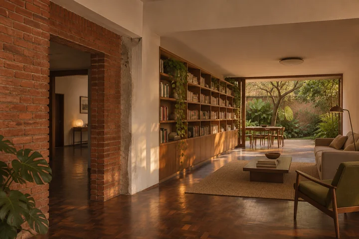

Manter
Registrar os pisos, portas e peças que podem permanecer e orientar a escolha dos materiais novos.
O que levar para a conversa
Fotos gerais e de detalhes das peças que você gostaria de preservar.

Reforma residencial
Uma reforma começa por entender a casa existente. A partir daí, fica mais claro o que adaptar, manter ou fazer em etapas.
Descrever minha reformaEstudo de reforma
Neste estudo, a abertura para o jardim muda a circulação, enquanto o piso e a parede de tijolos mantêm a leitura da construção original.
Registrar os pisos, portas e peças que podem permanecer e orientar a escolha dos materiais novos.
Fotos gerais e de detalhes das peças que você gostaria de preservar.
Reorganizar a passagem entre sala e jardim para que o acesso faça sentido no uso diário.
Fotos de como os ambientes se conectam hoje e uma lista do que atrapalha o percurso.
Separar as mudanças indispensáveis das que podem ser avaliadas em outra fase.
Datas importantes, ambientes que precisam seguir em uso e o que precisa estar pronto primeiro.

Levantamento
Antes de propor alterações, o estúdio reúne plantas ou fotos disponíveis, necessidades de uso e pontos que precisam ser conferidos no imóvel. O briefing indica por onde começar.
Informe quais ambientes precisam continuar funcionando. O estudo do imóvel ajuda a avaliar as etapas.
Indique no briefing que ainda não tem o levantamento. Fotos e medidas aproximadas ajudam na primeira conversa.
O pedido organiza as informações iniciais. Custos e viabilidade dependem de uma análise específica.
Escolha o tipo de espaço e indique o que já sabe sobre o imóvel.
Escolha o tipo de projeto, a área aproximada e o que você já tem em mãos.
Em um atendimento real, o estúdio confirmaria o escopo e combinaria uma conversa antes de preparar a proposta.